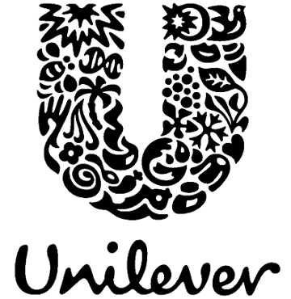
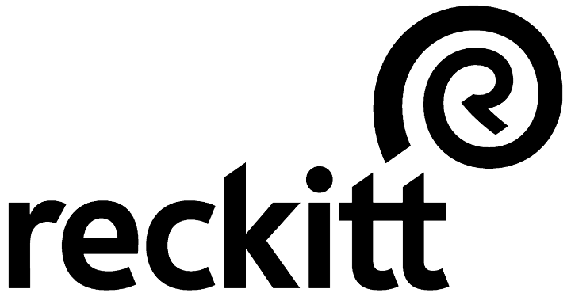
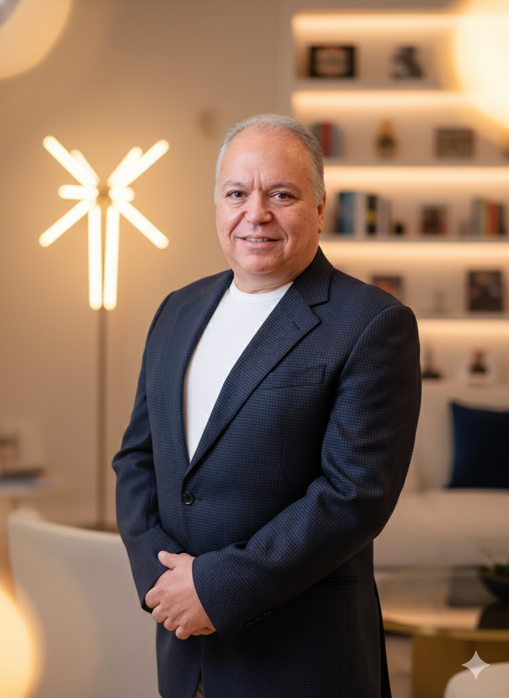

Leadership transition coaching
Navigate Leadership Transitions with Confidence and Impact
Executive coaching grounded in real-world global leadership experience, helping leaders navigate critical transitions, build trust, and create lasting impact.
No cost, no pressure, just a confidential conversation.
Trusted by Leaders from Global Organizations


About Carlos
I help executives navigate transitions, complexity, and change with greater clarity, credibility, and impact, while reducing uncertainty, avoiding early missteps, and building the trust they need to lead with clarity and confidence.
Before becoming an executive coach, I spent more than 20 years leading businesses and teams across the Americas and Europe, including senior leadership roles at Procter & Gamble, Unilever, Reckitt, and SC Johnson.
I have sat in the executive chair, led across cultures, aligned teams, made difficult decisions under pressure, and helped organizations move through transformation. That experience shapes how I coach. I understand the realities behind the leadership challenge, not only the theory.
As an ICF ACC, I combine practical executive experience with a structured coaching approach. I provide a safe and confidential space where leaders can examine assumptions, strengthen judgment, test new leadership behaviors, and turn insight into focused action.

ICF ACC | MBA, The Wharton School | 20+ Years of Global Executive Leadership
Who We Serve
We partner with leaders, teams, and organizations at moments when responsibilities expand, expectations rise, and the path forward is not yet clear.
Executives Stepping into Greater Responsibility
Newly promoted leaders, executives joining a new organization, and leaders taking on broader roles, teams, or markets.
Senior Leaders Navigating Complexity
Executives facing high-stakes decisions, competing priorities, stakeholder challenges, cultural differences, or organizational change.
Teams and Organizations Strengthening Leadership
Leadership teams, HR partners, and organizational sponsors seeking stronger alignment, early effectiveness, leadership continuity, and sustainable performance.
How I Work
My approach combines practical executive experience, challenging questions, and a structured coaching process.
I provide a safe and confidential space where you can think clearly, test assumptions, examine difficult choices, and explore possibilities that may be harder to see when the pressure is high. Together, we turn insight into focused action.
Strategic Clarity
I help you clarify what matters most, frame difficult choices, and make sound decisions when the pressure is high. We connect your priorities to the realities of your role, your organization, and the people you need to bring with you.
The aim is focused action and visible progress, not activity for its own sake.
Leadership Presence
Through focused dialogue and reflection, I help you understand how your leadership is experienced by others and adapt your approach without losing your authenticity.
We examine how you communicate, make decisions, and show up under pressure. The aim is greater credibility, influence, and confidence in the moments that matter.
Trusted Relationships
Leadership depends on the quality of the relationships around you. I help you read stakeholder dynamics, build trust, and address difficult conversations with greater clarity.
Together, we strengthen the relationships that support alignment, collaboration, and sustained progress, especially in diverse or high-stakes settings.
Created specifically for leaders and teams navigating transition.
For Organizations
Help Leaders Succeed When It Matters Most
Leadership transitions carry significant expectations for both the executive and the organization. When alignment is slow, priorities remain unclear, or stakeholder relationships are strained, the consequences can extend well beyond the individual leader.
I work with organizations to align leadership, culture, and strategy during periods of growth, transition, and transformation.
Through tailored coaching and leadership development, we help organizations:
- Support leadership transitions, onboarding, and early effectiveness.
- Strengthen trust and alignment among key stakeholders.
- Reduce avoidable friction during leadership transitions.
- Support leadership continuity and the development of critical talent.
- Build stronger collaboration and decision-making across teams.
The objective is practical: helping leaders succeed while strengthening the teams and organizations that depend on them.
Explore How We Can Work Together →How We Can Work Together
Practical, human-centered support for executives, teams, and organizations navigating growth, complexity, and change.
Signature focus
Executive Coaching for Growth and Complexity
Leadership Transition & Executive Onboarding
I work one-to-one with executives and high-potential leaders who are taking on greater responsibility, entering new environments, or facing complex leadership challenges.
Together, we work on the decisions, relationships, and leadership behaviors that shape your impact.
For leaders navigating transitions, expanded scope, stakeholder complexity, and change.
Team Coaching & Effectiveness
I help leadership teams understand how they work together, recognize patterns that support or limit progress, and create clearer agreements for communication, trust, and accountability.
The aim is stronger trust, more productive challenge, better decisions, and greater alignment around shared priorities.
For leadership teams navigating growth, integration, conflict, uncertainty, or organizational change.
Organizational Leadership Support
I support organizations as they align leadership, culture, and strategy during periods of growth, transition, or transformation.
Through facilitated conversations and practical reflection, leaders and teams can clarify priorities, address difficult issues, and build more consistent, capable, and human ways of working.
For organizations working through leadership change, cultural shifts, strategic realignment, or responsible digital transformation.
Every Leadership Transition Deserves a Thoughtful Start.
Navigating a new role, a difficult decision, or a changing organization? A confidential conversation can help you gain perspective, explore what's most important, and consider your next steps.
A confidential conversation
This conversation is an opportunity to explore your leadership challenges and consider whether working together could be valuable.
A thoughtful first step
- Gain perspective on the transition or challenge you are navigating.
- Explore what matters most right now.
- Consider practical next steps with greater clarity.
- Assess whether a coaching relationship could support your goals.
This conversation may be useful if...
- You are navigating a new role, a difficult decision, or a changing organization.
- You want a confidential space to reflect and gain perspective.
- You are considering how to build trust and alignment more quickly.
- You are ready to explore your next steps with greater clarity.
A brief, confidential conversation to explore your leadership challenges and whether working together could be valuable.
Ready to turn a critical transition into an opportunity?
No cost, no pressure, just a conversation about your next chapter.